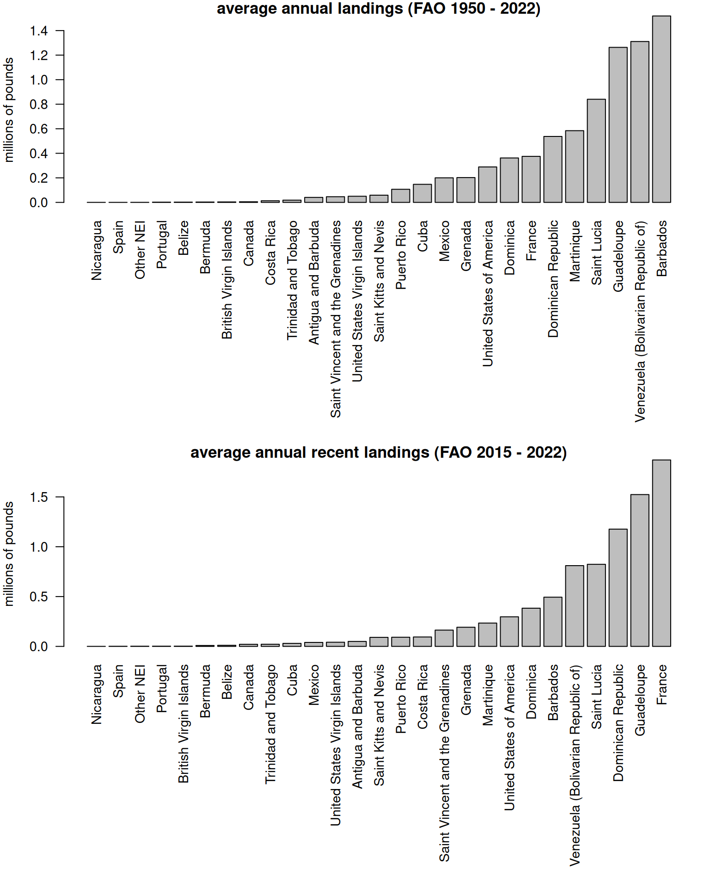
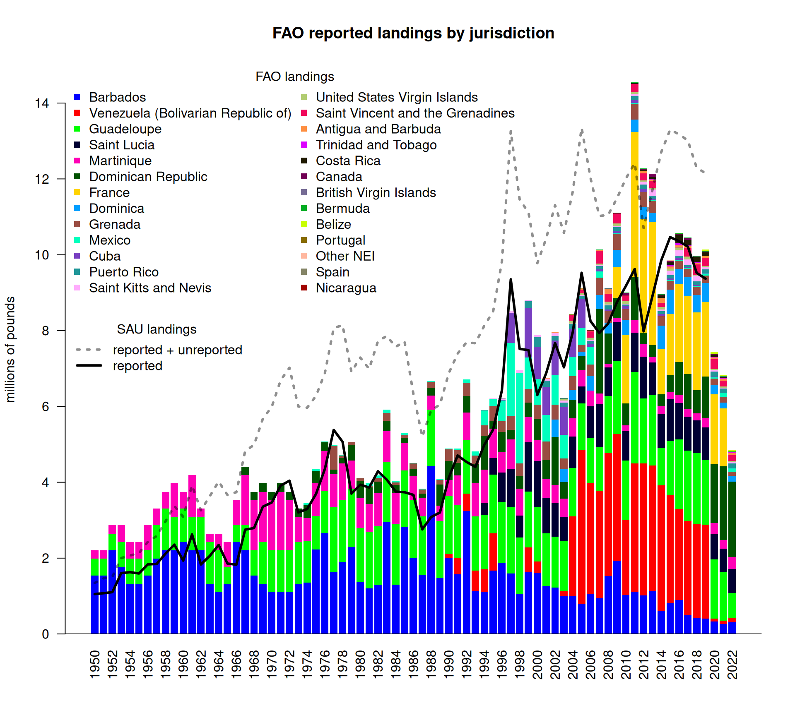
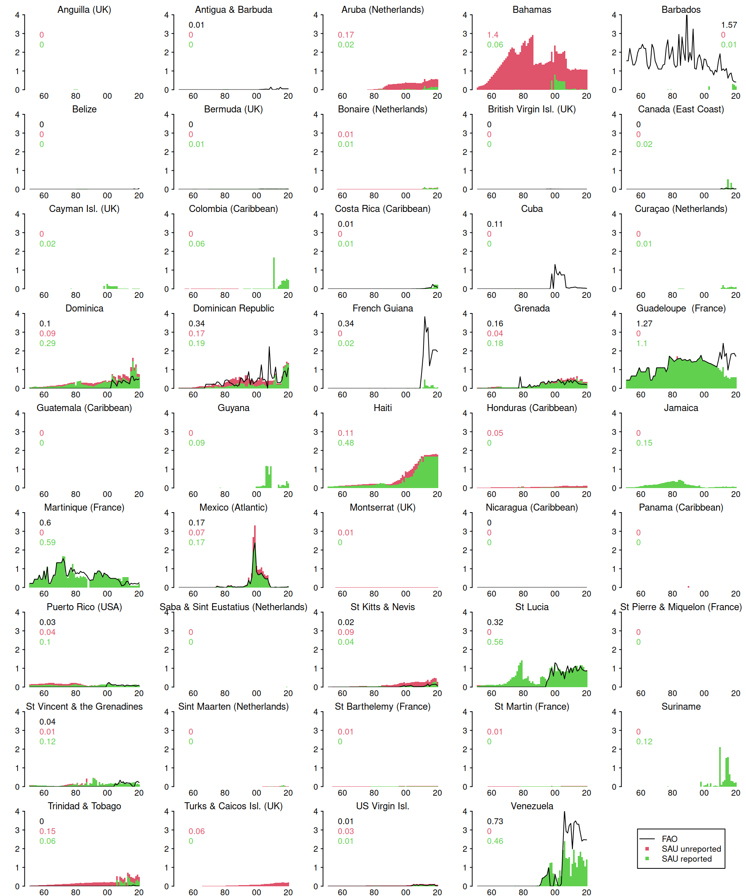
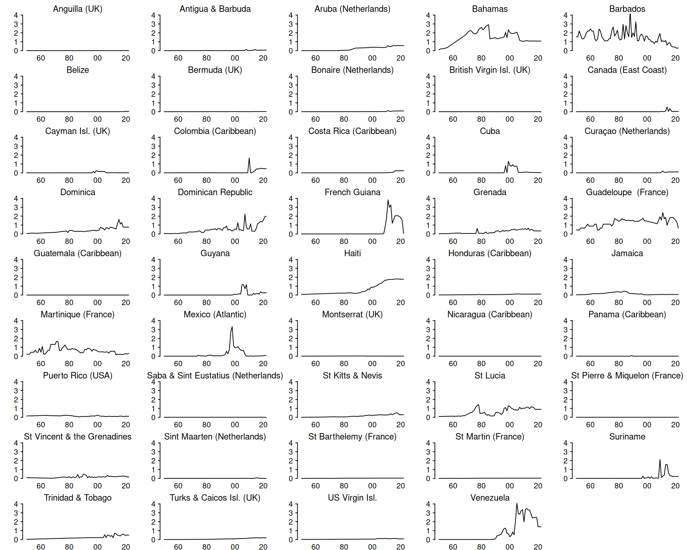
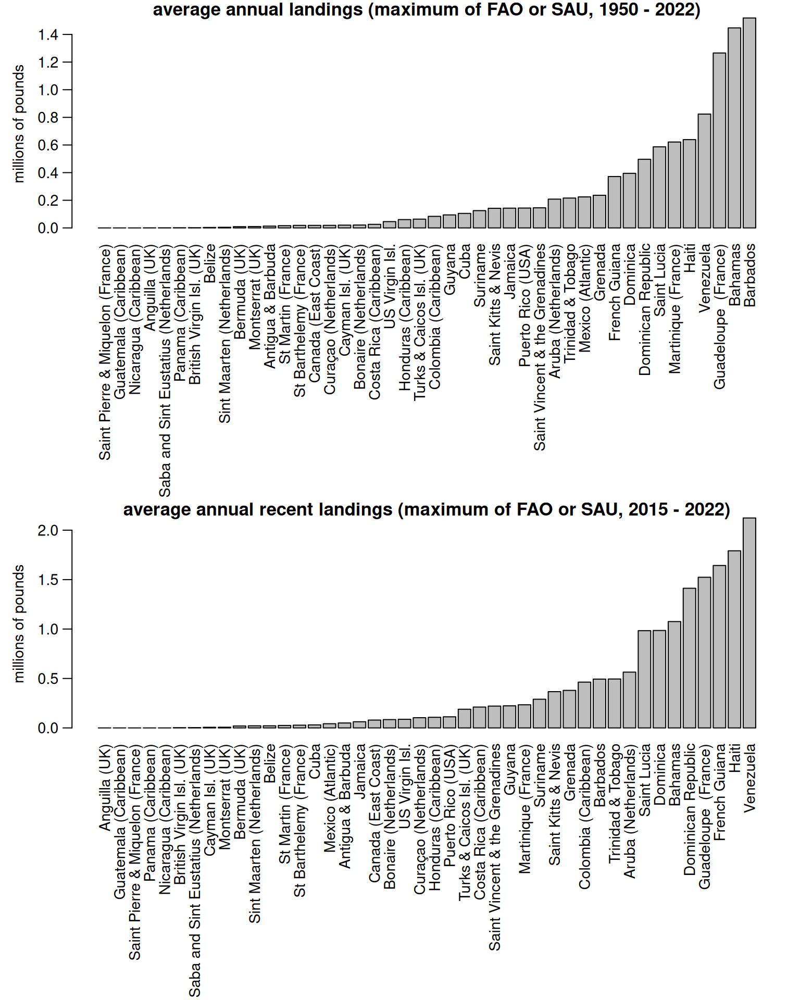
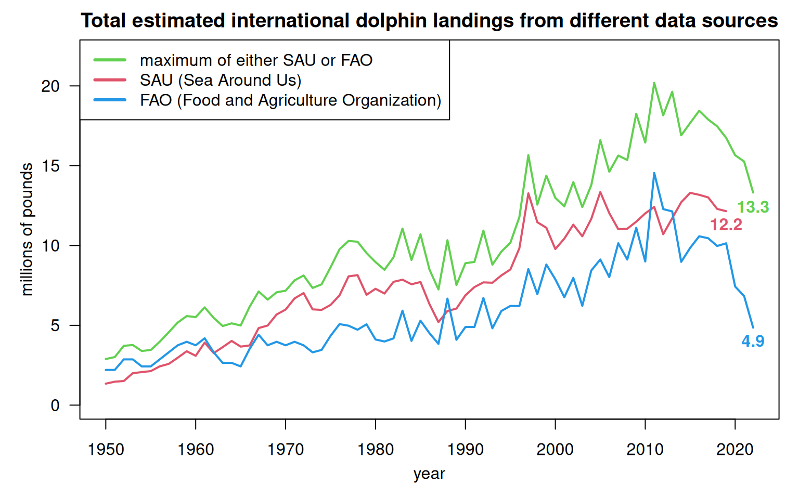
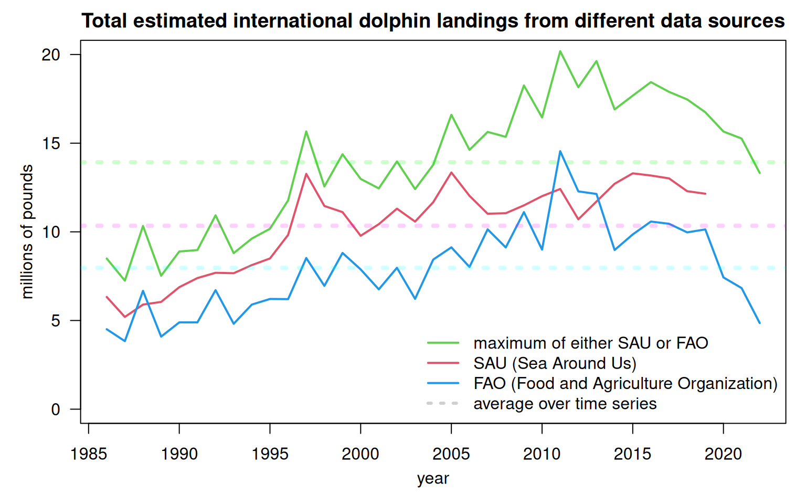

7.1 Compile catch in jurisdictional waters by discards and reporting type
The Food and Agriculture Organization (FAO) is a specialized agency of the United Nations that monitors global agriculture, forestry, and fisheries. Its fisheries database provides one of the most comprehensive long-term records of international wild-capture fishing, drawing directly from official national reporting and standardized estimation models. Unlike the Sea Around Us (SAU) database, the FAO database contains only data officially declared by member countries and does not apply any catch algorithms to fill in missing data. However, as a transparent and standardized database it offers a useful comparison to the SAU database.
Annual catch data for common dolphinfish (Coryphaena hippurus) were pulled from the FAO Global Capture Production database (FAO, 2024). We filtered the dataset for FAO Fishing Areas 21 (Northwest Atlantic) and 31 (Western Central Atlantic) using the 3-alpha species code DOL. The code for the data pull is in the FAO_access_data.R file; the data are saved and accessed locally here.
rm(list =ls()) # clear the workspace# librarieslibrary(pals)df <-read.csv("data/FAO_dolphin_data.csv")head(df)
JURISDICTION AREA SCIENTIFIC_NAME YEAR
1 Belize 21 Coryphaena hippurus 2022
2 Canada 21 Coryphaena hippurus 2022
3 Spain 21 Coryphaena hippurus 2022
4 United States of America 21 Coryphaena hippurus 2022
5 Venezuela (Bolivarian Republic of) 21 Coryphaena hippurus 2022
6 Antigua and Barbuda 31 Coryphaena hippurus 2022
Landings_Tonnes
1 20.051
2 2.545
3 0.439
4 25.000
5 0.000
6 25.000
apply(df[, 1:4], 2, table)
$JURISDICTION
Antigua and Barbuda Barbados
22 73
Belize Bermuda
84 73
British Virgin Islands Canada
29 73
Costa Rica Cuba
73 52
Dominica Dominican Republic
21 55
France Grenada
72 59
Guadeloupe Martinique
73 73
Mexico Nicaragua
59 1
Other NEI Portugal
70 1
Puerto Rico Saint Kitts and Nevis
24 28
Saint Lucia Saint Vincent and the Grenadines
29 73
Spain Trinidad and Tobago
76 11
United States of America United States Virgin Islands
146 20
Venezuela (Bolivarian Republic of)
39
$AREA
21 31
242 1167
$SCIENTIFIC_NAME
Coryphaena hippurus
1409
$YEAR
1950 1951 1952 1953 1954 1955 1956 1957 1958 1959 1960 1961 1962 1963 1964 1965
13 13 13 13 13 13 13 13 13 13 13 13 13 13 15 15
1966 1967 1968 1969 1970 1971 1972 1973 1974 1975 1976 1977 1978 1979 1980 1981
15 16 16 16 17 17 17 17 17 17 17 17 17 17 17 17
1982 1983 1984 1985 1986 1987 1988 1989 1990 1991 1992 1993 1994 1995 1996 1997
17 17 17 17 17 17 17 17 18 18 18 18 20 21 20 20
1998 1999 2000 2001 2002 2003 2004 2005 2006 2007 2008 2009 2010 2011 2012 2013
19 22 22 22 23 25 25 25 24 25 25 25 25 25 28 28
2014 2015 2016 2017 2018 2019 2020 2021 2022
28 28 28 28 28 28 28 29 28
df$lbs <- df$Landings_Tonnes *2204.62
We first look at the major countries reporting dolphin catches in the FAO database, for the historical period and the recent period. Note that only commercial catches are included for the United States.
df_recent <- df[which(df$YEAR >=2015), ]par(mar =c(15, 4, 1, 1), mfrow =c(2, 1), cex =0.9)barplot(sort(tapply(df$lbs/10^6, df$JURISDICTION, mean, na.rm = T)), las =2, horiz = F, cex.names =1,ylab ="millions of pounds", main ="average annual landings (FAO 1950 - 2022)")barplot(sort(tapply(df_recent$lbs/10^6, df_recent$JURISDICTION, mean, na.rm = T)), las =2, horiz = F, ylab ="millions of pounds", main ="average annual recent landings (FAO 2015 - 2022)")

Now we will compare the international catches from FAO with the SAU catches compiled in the previous section.
df_int <- df[which(df$JURISDICTION !="United States of America"), ]lis <-names(sort(tapply(df_int$lbs, df_int$JURISDICTION, mean, na.rm = T), decreasing = T))df_int$JURISDICTION <-factor(df_int$JURISDICTION, levels = lis)fao <-tapply(df_int$lbs, list(df_int$JURISDICTION, df_int$YEAR), sum, na.rm = T)fao[is.na(fao)] <-0# plot FAO vs SAUb <-barplot(fao/10^6, names.arg =1950:2022, col =glasbey(26), border =NA, las =2, ylim =c(0, 15), ylab ="millions of pounds", main ="FAO reported landings by jurisdiction")legend("topleft", ncol =2, rownames(fao), col =glasbey(26), pch =15, bty ="n", title ="FAO landings")abline(h =0)# load dataload("data/outputs/SAU_EEZs_WCA.RData") # SAU EEZ data for NED and NCA saved from earlierds <- dwest# remove bad catches from the database prior to summarizing#dim(ds)ds <- ds[-which(ds$area_name =="Venezuela"& ds$fishing_entity =="Unknown Fishing Country"), ]ds <- ds[-which(ds$area_name =="Curaçao (Netherlands)"& ds$fishing_entity =="USA"), ]#dim(ds)tot <-tapply(ds$lbs, ds$year, sum, na.rm = T) # total catch from SAUxs <- b[which(1950:2022<=2019)]tab_ds <-tapply(ds$lbs, list(ds$year, ds$catch_type, ds$reporting_status), sum, na.rm = T)#tail(tab_ds)repSAU <- tab_ds[, 2, 1] # reported catch from SAU#unrepSAU <- tab_ds[, 2, 2] # repSAU + unrepSAU is total - discards (very small)lines(xs, tot/10^6, lty =3, col ="#00000070", lwd =3)lines(xs, repSAU/10^6, lty =1, col =1, lwd =3)legend("left", c("reported + unreported", "reported"), title ="SAU landings", lwd =3, lty =c(3, 1), col =c("#00000070", 1), bty ="n")

We see that the FAO landings track quite closely with respect to the overall trends in the SAU reported landings, which is what we would expect since the SAU reported landings do not include any reconstructions. In general, the FAO landings are higher than the SAU reported landings, although in some years the SAU reported landings are higher. The total SAU landings (including reconstructions of unreported data) are generally much higher than the FAO estimates, though in some years very high landings in the early 2010s the estimates from FAO exceed SAU. Of note, there is a very steep decline in FAO catches in the last three years of the database (2020 - 2022), driven primarily by a decline in reported catches from Venezuela. As the SAU database only goes up to 2019, we lack the ability to compare these years.
We compare the SAU and FAO estimates at the individual jurisdictional level to better understand the differences between databases.
sau <-tapply(ds$lbs, list(ds$year, ds$reporting_status, ds$area_name), sum, na.rm = T)sau[is.na(sau)] <-0lk <-read.csv("data/FAO_SAU_lookup.csv", fileEncoding ="Windows-1252")par(mfrow =c(9, 5), mar =c(1, 2.5, 1.5, 0.5), mgp =c(1.5, 0.5, 0))for (i in1:dim(sau)[3]) { # for each jurisdicion b <-barplot(t(sau[, , i])/10^6, col =c(3, 2), # plot reported and unreported SAU datanames.arg =rep(NA, length(1950:2019)),beside = F, border =NA, space =0, xlab ="", ylab ="", ylim =c(0, 4), axes = F) repunrep <-round(rowMeans(t(sau[, , i])/10^6, na.rm = T), 2)axis(1, at = b[seq(10, 70, 20)], lab =c("60", "80", "00", "20"), tick = F, pos =0.2)axis(2, las =2, tcl =-0.2, at =0:4) maintext <-dimnames(sau)[[3]][i] # shorten main labels maintext <-gsub("\\band\\b", "&", maintext, ignore.case =TRUE) maintext <-gsub("\\b(Saint|St\\.)\\b", "St", maintext, ignore.case =TRUE)mtext(side =3, maintext, cex =0.75) mtch <- lk$FAO[which(lk$SAU ==dimnames(sau)[[3]][i])] # match to FAO name with lookup tableif (mtch !="") { f <- fao[which(rownames(fao) == mtch), 1:70]lines(b, f/10^6, col =1) repunrep[3] <-round(mean(f, na.rm = T) /10^6, 2) } lpos <-"topleft"; if (i ==5) { lpos ="topright"}legend(lpos, as.character(repunrep)[3:1], text.col =c(1, 2, 3), bty ="n")}plot.new()legend("center", c("FAO", "SAU unreported", "SAU reported"), col =1:3, lty =c(1, 0, 0), pch =c(NA, 15, 15))

The figure shows a stacked barplot of the reported (in green) and unreported (in red) landings from the SAU database, with the FAO landings overlaid (black line). The numbers in the upper left corner are the average landings over the entire time series (in millions of pounds per year; green = reported SAU, red = unreported SAU, black = FAO); panels with missing numbers indicate that no data were available.
The comparison of FAO versus SAU databases reveals notable differences and some similarities. In a few cases, the SAU reported estimates line up closely or exactly with the FAO estimates for parts of the time series (Guadeloupe, Martinique, Saint Lucia, Venezuela). The majority of the jurisdictions have very small amounts of landings in the SAU database and no FAO reporting. Bahamas has substantial reconstructed catches and Haiti has a high number of “reported” catches in the SAU database, but neither of these countries have any reporting in the FAO database. In some cases, the FAO database contains significant landings that do not appear in the SAU database (Barbados, Cuba, French Guiana, and more recent years in Guadeloupe and Venezuela.)
Given the discrepancies revealed by the jurisdiction-level comparison, it seems likely that both SAU and FAO could potentially be missing key aspects of the international fishing. A maximum estimate of total international landings could be compiled by summarizing the maximum reported value of landings for each year, within each jurisdiction. We calculate these maxima at this resolution and recompile the data.
SAU <-tapply(ds$lbs, list(ds$year, ds$area_name), sum, na.rm = T) # summary of SAU maxland <- SAU# dim(maxland)maxland[is.na(maxland)] <-0# placeholder for maximum landings# add 2020 - 2022 to SAU data (assume same as 2019 levels)maxland <-rbind(maxland, maxland[nrow(maxland),], maxland[nrow(maxland),], maxland[nrow(maxland),])for (i in1:ncol(maxland)) { # for each jurisdiction in SAU mtch <- lk$FAO[which(lk$SAU ==dimnames(maxland)[[2]][i])] # match names using lookup tableif (mtch !="") { # if there is a match f <- fao[which(rownames(fao) == mtch), ] # get the FAO data temp <-cbind(f, maxland[, i]) maxl <-apply(temp, 1, max, na.rm =TRUE) # calculate the maximum value by year maxland[, i] <- maxl # replace data with the maximum value }}# now plot the maximum landings time series by jurisdictionpar(mfrow =c(9, 5), mar =c(1, 2.5, 1.5, 0.5), mgp =c(1.5, 0.5, 0))for (i in1:dim(maxland)[2]) { plot(1950:2022, maxland[, i]/10^6, type ="l", xlab ="", ylab ="", ylim =c(0, 4), axes = F)axis(1, at =seq(1960, 2020, 20), lab =c("60", "80", "00", "20"), tick = F, pos =0.2)axis(2, las =2, tcl =-0.2, at =0:4) maintext <-dimnames(sau)[[3]][i] maintext <-gsub("\\band\\b", "&", maintext, ignore.case =TRUE) maintext <-gsub("\\b(Saint|St\\.)\\b", "St", maintext, ignore.case =TRUE)mtext(side =3, maintext, cex =0.75) }

The landings time series plotted here now represent the maximum reported value in either data base.
We look at which jurisdictions are contributing to the landings, for the entire time series and more recent years, based on this new maximum assumption data set.
par(mar =c(15, 4, 1, 1), mfrow =c(2, 1), mgp =c(2.5, 0.75, 0), cex =0.9)barplot(sort(colMeans(maxland, na.rm = T)/10^6), las =2, horiz = F, cex.names =1,ylab ="millions of pounds", main ="average annual landings (maximum of FAO or SAU, 1950 - 2022)")barplot(sort(colMeans(tail(maxland, 8), na.rm = T)/10^6), las =2, horiz = F, ylab ="millions of pounds", main ="average annual recent landings (maximum of FAO or SAU, 2015 - 2022)")

The top contributors to landings overall, according to this new combined data set, are: Barbardos (substantial landings from FAO but limited reported landings from SAU), Bahamas (no FAO data, with mostly unreported reconstructed SAU landings), and Guadeloupe (exactly the same landings reported in SAU and FAO from 1950 - 2007 with significant divergence in recent years).
We compare the three different time series: FAO landings, SAU landings, and maximum landings, across the entire time series.
par(mar =c(4, 4, 2, 1), mgp =c(2.2, 1, 0))plot(1950:2022, rowSums(maxland, na.rm = T)/10^6, type ="l", ylim =c(0, 22), las =1, lwd =2,xlab ="year", ylab ="millions of pounds", col =3,main ="Total estimated international dolphin landings from different data sources")lines(1950:2019, rowSums(SAU, na.rm = T)/10^6, col =2, lty =1, lwd =2)lines(1950:2022, colSums(fao, na.rm = T)/10^6, col =4, lty =1, lwd =2)text(2022, round(sum(maxland[nrow(maxland), ])/10^6, 1), round(sum(maxland[nrow(maxland), ])/10^6, 1), pos=1, col =3, font =2)text(2019, round(sum(SAU[nrow(SAU), ], na.rm = T)/10^6, 1), round(sum(SAU[nrow(SAU), ], na.rm = T)/10^6, 1), pos=1, col =2, font =2)text(2022, round(sum(fao[, ncol(fao)], na.rm = T)/10^6, 1), round(sum(fao[, ncol(fao)], na.rm = T)/10^6, 1), pos=1, col =4, font =2)legend("topleft", c("maximum of either SAU or FAO", "SAU (Sea Around Us)", "FAO (Food and Agriculture Organization)"), col =c(3, 2, 4), lty =1, lwd =3)

The three different time series are similar in magnitude and trend during the first several decades, and grow increasingly divergent in time. The numbers on the plot show the total landings from each time series in the terminal year of data.
We take a closer look at the years of data used in the dolphin operating model.
par(mar =c(4, 4, 2, 1), mgp =c(2.2, 1, 0))plot(1986:2022, rowSums(tail(maxland, 37), na.rm = T)/10^6, type ="l", ylim =c(0, 20), las =1, lwd =2,xlab ="year", ylab ="millions of pounds", col =3, main ="Total estimated international dolphin landings from different data sources")lines(1986:2019, rowSums(tail(SAU, 34), na.rm = T)/10^6, col =2, lty =1, lwd =2)lines(1986:2022, colSums(fao[, 37:73], na.rm = T)/10^6, col =4, lty =1, lwd =2)abline(h =mean(rowSums(tail(maxland, 37), na.rm = T)/10^6), col ="#00FF0030", lwd =4, lty =3)abline(h =mean(rowSums(tail(SAU, 34), na.rm = T)/10^6), col ="#FF00FF30", lwd =4, lty =3)abline(h =mean(colSums(fao[, 37:73], na.rm = T)/10^6), col ="#00FFFF30", lwd =4, lty =3)legend("bottomright", c("maximum of either SAU or FAO", "SAU (Sea Around Us)", "FAO (Food and Agriculture Organization)", "average over time series"), col =c(3, 2, 4, "#00000030"), lty =c(1, 1, 1, 3), lwd =c(2, 2, 2, 3), bty ="n")

The more recent data show that assumptions regarding levels of international catches vary quite widely depending on the data source. The maximum landings data suggest that catches have increased significantly from 1986 to 2011, followed by a substantial decrease with the most recent landings just below the average of the time series. The SAU data suggest an increase from 1986 to the late 1990s, with relatively stable landings over the last 20 years. Finally, the FAO data suggests an increase in the early years with a large peak in 2011, followed by a significant decline, with the most recent landings falling back to the late 1980s levels.
7.2 References
FAO. (2024). Fisheries and Aquaculture Division: Global Capture Production 1950–2022 (Release 2024.1.0) [Data set]. Food and Agriculture Organization of the United Nations. https://www.fao.org/fishery/collection/capture/en